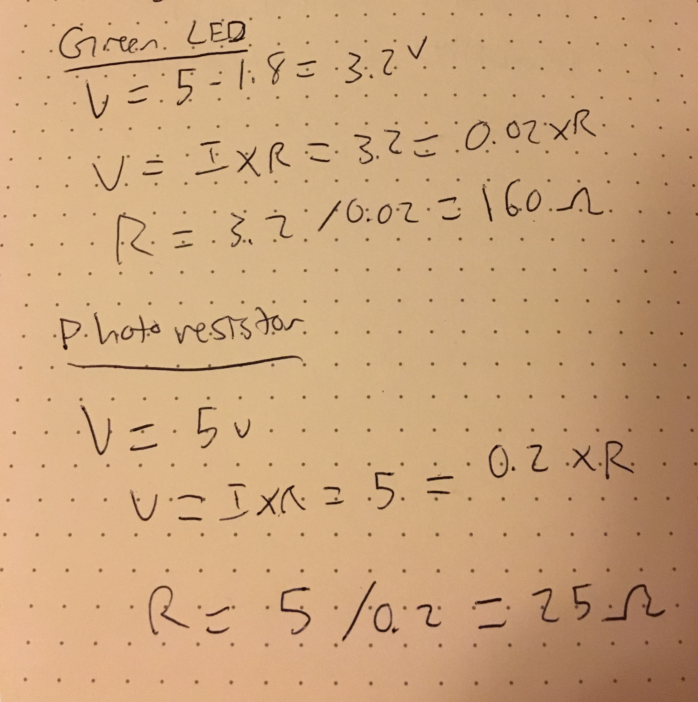

Garrett's Assignment 3 - Manipulating input/output photoresistor!
Schematic
Key parts of the schematic include: green LED and 330 ohm resistor connected to pin 11, photoresistor and 10k ohm resistor connected to input Analog 0.

Calculations
In order to prevent the circuit from shorting and breaking pieces, I calculated resistance values. Using Ohm's law to calculate the resistance values, I calculated the required minimum resistance of the green LED and the photoresistor. I assumed minimum current usage of LED's to be 0.02mA and photoresistor 200mA. Thus, calculated a minimum resistor value for green LED as 160 ohms and photoresistor, a minimum of 25 ohms. I used a 330 ohm resistor for LED and 10k ohm resistor for photoresistor, to ensure nothing breaks. Specific calculations are below:
Circuit
The circuit's green LED is turned off whenever the photoresistor reads a value greater than 100. When the photoresistor reads a value not greater than 100, the LED will turn on based on an analogWrite value mapped to output value.
Firmware
The general logic of this code initializes an input pin to analog 0, an output value mapping the sensor reading value, and an LEDpin to pin 11. The base light value in my room is around 110. Thus, using an if-statement to check if the light value is greater than 100, the light value will be turned off. When a light value that is not greater than 100 is read, the LED will turn on based on an analog mapped value.
/*
* Garrett Mar
* HCDE 439
*/
// Analog input mapped to the A0 pin
int analogInPin = 0;
// Green LED connected to pin 11
int LEDpin = 11;
// The analog reading from the sensor divider
int sensorValue;
// The output value from mapping function and sensorValue
int outputValue;
void setup() {
// Initialize serial communications at 9600 bps:
Serial.begin(9600);
}
void loop() {
// Read the value from the analogInPin, A0
sensorValue = analogRead(analogInPin);
//Map output 0-1023 to 0-255 to the range analogWrite uses
outputValue = map(sensorValue, 0, 1023, 0, 255);
// If sensor value is greater than 100, turn green LED off
if (sensorValue > 100) {
// Set LED to zero, turned off
digitalWrite(LEDpin, 0);
// Print OFF statement to serial monitor
Serial.println("LED off, it's too bright!");
}
// If sensor value is not greater than 100, turn green LED on
else {
// Set value of green LED to brightness equal to output value
analogWrite(LEDpin, outputValue);
// Print ON statement to serial monitor
Serial.println("LED on, just enough darkness");
}
// Wait 100 milliseconds before the next loop for the analog-to-digital
// converter to settle after the last reading:
delay(100);
}
Operating Circuit
Here is an animated GIF of everything in action! It turns on the green LED when the photoresistor is covered and turns the LED off when not covered.